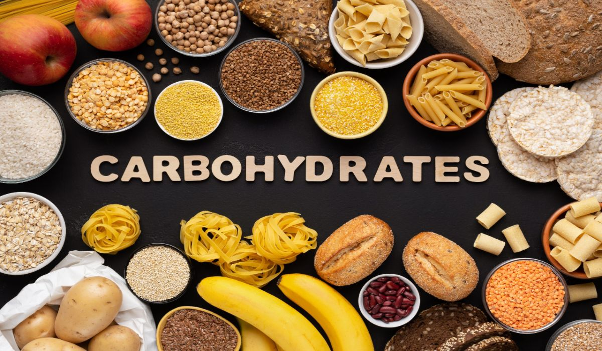

Harvardlı beyin uzmanı Christopher Palmer zinde, enerjik ve sağlıklı olmak adına kaçındığı şeyleri 6 maddeyle sıraladı.
Psikiyatrist ve sinirbilimci olarak 27 yıldırı fizyolojik ve
psikolojik sağlık arasındaki bağlantıları incelediğini belirten
Palmer, 20'li yaşlarında da metabolik sendromdan mustarip olduğunu
açıkladı.
Metabolik sendrom, kalp damar hastalıkları ve diyabet oluşumuna yol
açan fazla kilo, yağ-kolesterol metabolizması bozuklukları, yüksek
tansiyon ve şeker metabolizması bozukluklarının bir arada bulunduğu
bir tablo olarak tanımlanıyor.
Palmer yaşamında bazı değişiklikler yaparak birkaç ay içinde bunun
üstesinden geldiğini bildirdi.
Harvardlı beyin uzmanının uyarıları şu şekilde:

1.YÜKSEK KARBONHİDRATLI YİYECEKLER TÜKETMEYİN
Palmer beslenme düzeninin obezite, diyabet ve kalp sağlığında rol
oynadığının çoğu kişi tarafından bilindiğini ancak beyin üzerindeki
etkilerinin farkında olunmadığını söyledi.
Düşük karbonhidratlı beslenme şekliyle metabolik sendromun üstesinden
geldiğini söyleyen bilim insanı tahıl, unlu mamuller, tatlılar ve
nişasta ya da şeker oranı yüksek meyvelerin azaltılabileceğini ifade
etti.
Palmer kahvaltıda genellikle yumurta yediğini söyledi. Uzman diğer öğünlerde sebze, meyve, bol miktarda et, balık ve tavuk tükettiğini belirtti: Bu kilomu sağlıklı bir seviyede ve kan şekerimi düşük tutmamı sağladı.
2.EGZERSİZE 2 GÜNDEN FAZLA ARA VERMEYİN
2018'de saygın hakemli tıp dergisi The Lancet'te yayımlanan ve 1,2
ABD'li üzerinde yapılan bir çalışma, egzersizin akıl sağlığına iyi
geldiğini gösterdi.
Haftada 3-5 kez 45'er dakika egzersiz yaptığını söyleyen Palmer
esneme, karın egzersizleri, ağırlık kaldırma, koşma, bisiklet binme,
yüzme ve tempolu yürüyüş yaptığını kaydetti.
Her gün egzersiz yapmak için kendimi zorlamıyorum ama aerobik
hareketlere de hiç iki günden fazla ara vermiyorum.
3.7 SAATTEN AZ UYUMAYIN
Yetersiz uyku bilişsel işlevlerde bozulma yol alabiliyor. Bu durum
Alzheimer hastalığı riskini artırabiliyor. Yetersiz uyku ayrıca ruh
halini etkilerken depresyona da neden olabiliyor. Uyku sürecinde
vücudun "dinlendiğini ve kendini onardığını" vurgulayan beyin uzmanı,
7 saatten daha az uyumamaya dikkat ettiğinin altını çizdi.
4.İÇKİ İÇMEYİN
Palmer önceden içki içtiğini, ancak Haziran 2020'de bir aylığına
alkolü bırakmaya karar verdiğini ifade etti. Birkaç hafta içinde
uykusunda ve üretkenliğinde iyileşme kaydettiğini açıklayan Harvardlı
araştırmacı, bu yüzden içkiyi tamamen bırakmaya karar verdiğini
söyledi.
Bu, içkiyi tamamen bırakmanız gerektiği anlamına gelmiyor. Ancak bir
zamanlar alkolün sağladığına inandığımız faydalar şimdi sorgulanıyor.
Hakemli bilimsel dergi Nature'da martta yayımlanan bir araştırma,
alkolün olumsuz etkilerinin her kadehte daha da güçlendiğini
göstermişti. 36 binden fazla yetişkin üzerinde yapılan bir araştırma,
haftada birkaç bira veya bir kadeh şarap gibi mütevazı düzeylerde içki
içmenin bile beyne zarar verme riski oluşturabileceğini ortaya
koymuştu.
5.KİŞİSEL GELİŞİMİ SÜRDÜRMEMEZLİK YAPMAYIN
Palmer, psikoterapi sayesinde ruhsal sağlığın iyileştirilebileceğini
ve böylece hayatınızın değişebileceğini savundu. Uzman bu sayede
bireylerin "kim olduğunu ve hayattan ne istediğini anlayabileceğini"
ifade etti.
Palmer ayrıca empati, ilişkiler, sosyal beceriler ya da bilişsel
becerileri geliştirmeye odaklanan psikoterapinin az gelişmiş beyin
devrelerini güçlendirebileceğini vurguladı.
6.HAYATTAKİ AMACINIZI UNUTMAYIN
Beyin uzmanı, amaçsızlığın kronik strese ve bilişsel işlevlerde
zayıflamaya yol açabileceğini söyledi.
Amaç sahibi olmanın çok yönlü bir durum olduğunu unutmayın. Bu diğer
insanlarla, kendinizle ve toplumla olan ilişkiyi içeriyor. Hepimiz
topluma katkı vermemizi ve kendimizi değerli hissetmemizi sağlayan en
az bir role sahip olmayı amaçlamalıyız.
 Anne Sütü Bebeğin İlk Aşısıdır!
Anne Sütü Bebeğin İlk Aşısıdır!
 100 Yaşına Kadar Yaşamak Mümkün Mü?
100 Yaşına Kadar Yaşamak Mümkün Mü?